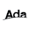

Website is based on data scraped from tiobe.com. It shows top 20 most popular programming languages
1. Python

- Last year position: 1
- Rating: 23.85%
- More info - tiobe.com
- Extra information about language
2. C++
- Last year position: 3
- Rating: 11.08%
- More info - tiobe.com
- Extra information about language
3. Java
- Last year position: 4
- Rating: 10.36%
- More info - tiobe.com
- Extra information about language
4. C

- Last year position: 2
- Rating: 9.53%
- More info - tiobe.com
- Extra information about language
5. C#

- Last year position: 5
- Rating: 4.87%
- More info - tiobe.com
- Extra information about language
6. JavaScript
- Last year position: 6
- Rating: 3.46%
- More info - tiobe.com
- Extra information about language
7. Go
- Last year position: 8
- Rating: 2.78%
- More info - tiobe.com
- Extra information about language
8. SQL

- Last year position: 7
- Rating: 2.57%
- More info - tiobe.com
- Extra information about language
9. Visual Basic

- Last year position: 10
- Rating: 2.52%
- More info - tiobe.com
- Extra information about language
10. Delphi/Object Pascal
- Last year position: 15
- Rating: 2.15%
- More info - tiobe.com
- Extra information about language
11. Fortran

- Last year position: 14
- Rating: 1.70%
- More info - tiobe.com
- Extra information about language
12. Scratch
- Last year position: 9
- Rating: 1.66%
- More info - tiobe.com
- Extra information about language
13. PHP

- Last year position: 12
- Rating: 1.48%
- More info - tiobe.com
- Extra information about language
14. Rust
- Last year position: 17
- Rating: 1.23%
- More info - tiobe.com
- Extra information about language
15. MATLAB

- Last year position: 13
- Rating: 0.98%
- More info - tiobe.com
- Extra information about language
16. R
- Last year position: 21
- Rating: 0.94%
- More info - tiobe.com
- Extra information about language
17. Assembly language

- Last year position: 11
- Rating: 0.87%
- More info - tiobe.com
- Extra information about language
18. Ada

- Last year position: 24
- Rating: 0.85%
- More info - tiobe.com
- Extra information about language
19. Kotlin
- Last year position: 19
- Rating: 0.85%
- More info - tiobe.com
- Extra information about language
20. COBOL

- Last year position: 20
- Rating: 0.84%
- More info - tiobe.com
- Extra information about language